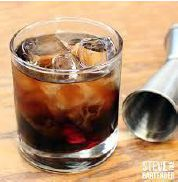

O Black Russian é um cocktail simples mas sofisticado que combina a neutralidade da vodka com a riqueza do licor de café.
Método de Preparo
GuarniçãoNão aplicável. |
 |
O cocktail Black Russian apareceu pela primeira vez em 1949 e é atribuído a Gustave Tops, um barman belga, que o criou no Hotel Metropole em Bruxelas em honra de Perle Mesta, então Embaixadora dos Estados Unidos no Luxemburgo.